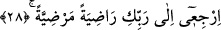
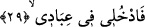
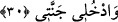

temkînde telvîn makamına ulaşır. Çünkü fenâya eren kimse kendi vasıflarına geri
çevrilmez. Terakkî makamında temkîn üzere olan kimse nefs-i emmâre makamına
düşmekten kurtulur.
et-Ta’rîfât’ta der ki: Nefs-i mutmainne kalb nuruyla aydınlanan, nihâyet kendi kötü
sıfatlarından kurtulup güzel ahlak ile bezenen nefistir.
Kâşifî der ki: Ey benim zikrimle huzura ermiş nefis, nimet içindeyken şükrederdin,
mihnet gördüğünde ise sabrederdin.
Mânâ şöyledir: Allah Teâlâ, mü’mine ikram olsun diye Mûsâ (a.s.) ile konuştuğu
bizzat veya meleğin lisanı ile hitab eder. Bu hitab hesap tamam olduğu zamandır. Şöyle
buyurur: “Ey huzura kavuşmuş nefis!”
28. Sen O’ndan hoşnut, O da senden hoşnut olarak Rabbine dön.
“Sen” sana verilen ebedi nimetlerden dolayı “O’ndan hoşnud” ve onun katında
“hoşnudluğa ermiş olarak Rabbine” sana vaad ettiği ikrama ve yakınlığa “dön.” Allah
Teâlâ’nın gayelerin en sonu olması ancak bu îtibarla olur. Böylece Mücessime’nin bu
âyete sarılması geçersiz olur. Onlar bu dön emrinin ruhun yaratılma bakımında önce
olmasına delil saymışlardır.
29. (Seçkin) kullarım arasına katıl,
Bana has olan sâlih kullarımın zümresine gir.
30. Ve Cennetime gir!
“Ve” onlarla birlikte “Cennetime gir.” Bu âyet “Rahmetinle, beni iyi kulların
arasına kat.” (en-Neml, 27/19) âyetine benzer. Allah’ın has kullarının zümresine
girmek rûhânî saâdetin ta kendisidir. Onlarla birlikte Cennete girmek ise cismânî
saâdettir.
Burada “nefis” ile ruhun kasdedildiği de söylenmiştir. Buna göre mânâ şöyledir: Ey
ruh ayrılmış olduğun kullarımın cesedlerine gir ve benim sevap yurduma katıl. Bu tefsir,
“Cennetime gir” hitabının öldükten sonra yeniden dirilme esnasında olacağını ileri